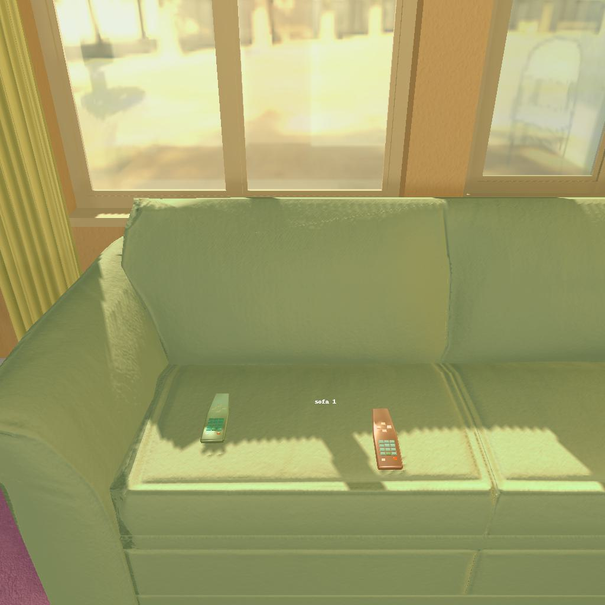

---------------------------------------------------------task: 7---------------------------------------------------------
--------------------------------------------------------------------------------------------------------------------------------------------------------------------
--------------------------------------------------------------------------------------------------------------------------------------------------------------------
Step:--------------------------------------------------------------------------2-------------------------------------------------------------------------------
----------------------------------------
VLM Prompt:
Image1:
Image2:
Image3:
**Instruction**
1. Analyze the provided image to identify all visible household objects, focusing on those relevant to the task description "put a creditcard in coffeetable."
2. Use the analysis of the image and the task hint "The agent must find an object of the desired type, pick it up, find the correct location to place it, and put it down there." to answer the question: what is the most reasonable action in the choices for the task description "put a creditcard in coffeetable"?
4. Decide and write the answer using the template: The answer is: (i): , where i is the real number. If there is no desired object in the image, search every place based on **Initial Observation** to find the object. And if no one is exactly correct, choose a similar answer.
**Initial Observation**
You are in the middle of a room. Looking quickly around you, you can see armchair (1-2), dresser (1), garbagecan (1), cabinet (1-4), drawer (1-4), coffeetable (1), sidetable (1), sofa (1)
**Answer Choices**
(1): go to armchair 1
(2): go to armchair 2
(3): go to dresser 1
(4): go to garbagecan 1
(5): go to cabinet 1
(6): go to drawer 1
(7): go to drawer 2
(8): go to cabinet 2
(9): go to drawer 3
(10): go to cabinet 3
(11): go to drawer 4
(12): go to cabinet 4
(13): go to sidetable 1
(14): go to sofa 1
(15): take box 1 from coffeetable 1
(16): take remotecontrol 1 from coffeetable 1
(17): take lightswitch 1 from coffeetable 1
**Answer**
Let's think step by step by following the instructions.
----------------------------------------
----------------------------------------
Original Response:
The task is to put a credit card on the coffee table. From the initial observation, we know that there is a coffee table (1) in the room. Analyzing the images, Image 2 and Image 3 show the coffee table with a box (box 1) and a remote control (remotecontrol 1) on it. There is no credit card visible on the coffee table or in the immediate surroundings.
Since the task is to put a credit card on the coffee table and the credit card is not visible in the provided images, we must search other places where a credit card might be located based on the initial observation.
A credit card is a small, flat item typically kept in locations such as drawers, cabinets, or on surfaces like a dresser or a sidetable. It is less likely to be found on an armchair, sofa, or in a garbagecan.
Considering the most reasonable places to find a credit card, we can eliminate answers (1), (2), (4), (14), (15), (16), and (17) as they are not typical locations where one would find a credit card.
The remaining options are drawers, cabinets, and the dresser. Among these, a dresser (answer 3) or a sidetable (answer 13) are more common places to place personal items like a credit card temporarily, so they should be checked first before proceeding to look inside drawers and cabinets.
The answer is: (3): go to dresser 1
----------------------------------------
----------------------------------------
>>> Refine Original VLM Response and Get Pure Action: go to dresser 1
----------------------------------------
-----------------------------------------------------------------
Running time: 13.842955350875854 seconds
Total Money: 3.738809999999999
-----------------------------------------------------------------
-----------------------------------------------------------------
Text Observation:You arrive at loc 2. On the dresser 1, you see a television 1, and a statue 1.
-----------------------------------------------------------------
UNSUCCEED